04.30.2008 18:42
Right Whales hits the AP news wire
This topic is really taking off.
Delay in ruling on endangered right whales criticized [sea coast online]
Delay in ruling on endangered right whales criticized [sea coast online]
... An attempt to protect the endangered right whale from being killed by commercial ships has languished for more than a year in part because Vice President Dick Cheney's office and White House economists questioned the conclusions of marine scientists, according to internal documents. . The documents were released Wednesday by Rep. Henry Waxman, D-Calif., who questioned why White House officials had raised "baseless objections" to findings by government scientists who for years had been studying the dangers posed to the whale by commercial shipping. . "The North Atlantic right whale is one of the most critical endangered species on Earth," Waxman wrote the White House Office of Management and Budget, demanding to know why the final regulation to increase protection for the whale from commercial vessels was being held up. . Only about 300 to 350 of the whales, which are protected under the Endangered Species Act, remain in Atlantic waters off the eastern seaboard. At least 19 of the whales have been confirmed killed since 1986 and marine conservationists believe other fatal collisions likely were never reported. ... The federal Marine Fisheries Service, which enforces the Endangered Species Act for marine species, sent a final regulation to OMB for review in February 2007 that would require commercial ships to slow their speed to 10 knots in areas where the whale is known to inhabit. ...
04.30.2008 08:27
Google Oceans rumor on CNet
Update: The CNet article made slashdot: Google Sets Sights On 3D Map of the Oceans
I got asked to comment on this by CNet and UNH but stayed silent.
Google diving into 3D mapping of oceans
Found the article via Rumor-mill: Google Ocean in the Works [Google Earth Blog]
Yes, Google has gotten an earful from many of us about not being able to have bathymetry/geometry below the geoid 0 elevation. And since I am sitting in Science Operation Center (SOC) for Phoenix, we'd like to have Google Mars (more than just the Google Maps version).
See also: Google Goes Back to 1500, Plans to Map the Oceans [gizmodo] - Under water photography??? I think they meant multibeam bathymetry, but a photo mosaic that big would be awesome. That'll keep Yuri busy for a long time correcting images.
I got asked to comment on this by CNet and UNH but stayed silent.
Google diving into 3D mapping of oceans
... Asked to comment on Google Ocean, a Google spokeswoman said the company had "nothing to announce right now." . Oceanography researchers, however, say such a tool would be incredibly useful. . "There is no real terrain or depth model for the ocean in Google Earth," said Tim Haverland, a geospatial application developer at the Fisheries Service of the National Oceanic and Atmospheric Administration (NOAA). "You can't get in a submarine and in essence fly through the water and explore ocean canyons yet." . Google Ocean will feature a basic layer that shows the depth of the sea floor and will serve as a spatial framework for additional data, sources said, adding that Google plans to try to fill in some areas of the map with high-resolution images for more detail. . Additional data will be displayed as overlying layers that depict phenomena like weather patterns, currents, temperatures, shipwrecks, coral reefs, and algae blooms, much like the National Park Service and NASA provide additional data for Google Earth and Google Sky. ...
Found the article via Rumor-mill: Google Ocean in the Works [Google Earth Blog]
Yes, Google has gotten an earful from many of us about not being able to have bathymetry/geometry below the geoid 0 elevation. And since I am sitting in Science Operation Center (SOC) for Phoenix, we'd like to have Google Mars (more than just the Google Maps version).
See also: Google Goes Back to 1500, Plans to Map the Oceans [gizmodo] - Under water photography??? I think they meant multibeam bathymetry, but a photo mosaic that big would be awesome. That'll keep Yuri busy for a long time correcting images.
04.29.2008 16:32
Phx ORT 10 begins
We are currently in simulated EDL (Entry, Decent, and Landing) for the
beginning of ORT 10 (Operations Readiness Test). 26 days until we
actually land on Mars.
04.28.2008 23:14
Right Whales make slashdot (again)
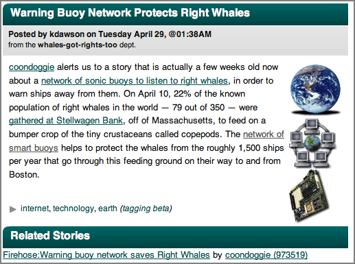
Warning Buoy Network Protects Right Whales [slashdot]
Previously (like not that many hours before): Warning buoy network saves Right Whales [slashdot] that links to Warning buoy network saves Right Whales [networkworld]
A new network of smart buoys is adding some much needed protection for endangered Right Whales in Massachusetts Bay's shipping lanes which see some 1,500 ships pass through every year. . The Cornell Lab of Ornithology and Woods Hole Oceanographic Institution deployed the 10-buoy Right Whale Listening Network that can recognize whales' distinctive calls and route the information to a public Web site and a marine warning system, giving ships the chance to avoid deadly collisions. An extraordinary large number of North Atlantic right whales were in the bay earlier this month. . A Boston Globe report said aerial surveys done by the Provincetown Center for Coastal Studies determined that about 79 of the world's remaining 350 right whales - 22% -- were feeding in the Stellwagen Bank National Marine Sanctuary and Cape Cod Bay on April 10. As of this writing 61 Right Whale calls had been detected in the past 24 hours according to the research Web Site. ...
04.28.2008 17:42
Python unicode - ascii issues
What is the real solution to this trouble with python?
self.abstract = r.xpath('abstract/style')[0].text
print self.abstract
tmp.write(self.abstract)
Which results in errors like this:
UnicodeEncodeError: 'ascii' codec can't encode character u'\xf8' in position 50: ordinal not in range(128)How can I get something sane that works as UTF-8 when I'm getting all sorts of input?
04.28.2008 10:11
Duck Island UXO
Janice sent me: "UXO within Isles of Shoals(?) Ever wondered why Duck Island is listed as "Restricted Area" on NOAA Chart 13283?"
Duck Island's military past raises big questions [seacoastonline]
Duck Island's military past raises big questions [seacoastonline]
... But from 1945 to 1967, the island was not inhabited by anything. What life was there didn't live for long, and "duck" had a completely different meaning. . Prior to being named "Duck Island," this unassuming piece of rock - the northernmost of the Isles of Shoals - was used by the U.S. Navy as target practice. Pilots from the Squantum, Mass., Naval Air Station perfected dive-bombing tactics and other aviation weapons training, using the island as a target. . Decades later, the federal government seeks to determine whether Duck Island and 961 other former military weapons training sites in the country are environmental hazards. ...
04.28.2008 10:04
Whale Watching issues
Just out, the SBNMS has a paper out on whale watching and volunetary compliance:
David N. Wiley et al., Effectiveness of Voluntary Conservation Agreements: Case Study of Endangered Whales and Commercial Whale Watching, Conservation Biology, 22:2, 450-457.
This made the Boston Globe today: Whale-watching boats are putting whales in jeopardy, study says.
David N. Wiley et al., Effectiveness of Voluntary Conservation Agreements: Case Study of Endangered Whales and Commercial Whale Watching, Conservation Biology, 22:2, 450-457.
Abstract: The use of voluntary approaches to achieve conservation goals is becoming increasingly popular. Nevertheless, few researchers have quantitatively evaluated their efficacy. In 1998 industry, government agencies, and nongovernmental organizations established a voluntary conservation program for whale watching in the northeast region of the United States, with the intent to avoid collisions with and harassment of endangered whales by commercial and recreational whale-watching vessels. One important aspect of the program was the establishment of 3 speed zones within specific distances of whales. We wanted to determine the level of compliance with this aspect of the program to gauge its efficacy and gain insights into the effectiveness of voluntary measures as a conservation tool. Inconspicuous observers accompanied 46 commercial whale-watching trips from 12 companies in 2003 (n = 35) and 2004 (n = 11). During each trip, vessel position and speed were collected at 5-second intervals with a GPS receiver. Binoculars with internal laser rangefinders and digital compasses were used to record range and bearing to sighted whales. We mapped whale locations with ArcGIS. We created speed-zone buffers around sighted whales and overlaid them with vessel-track and speed data to evaluate compliance. Speeds in excess of those recommended by the program were considered noncompliant. We judged the magnitude of noncompliance by comparing a vessel's maximum speed within a zone to its maximum recorded trip speed. The level of noncompliance was high (mean 0.78; company range 0.74-0.88), some companies were more compliant than others (p = 0.02), noncompliance was significantly higher in zones farther from whales (p < 0.001), and operators approached the maximum speed capabilities of their vessel in all zones. The voluntary conservation program did not achieve the goal of substantially limiting vessel speed near whales. Our results support the need for conservation programs to have quantifiable metrics and frequent evaluation to ensure efficacy.
This made the Boston Globe today: Whale-watching boats are putting whales in jeopardy, study says.
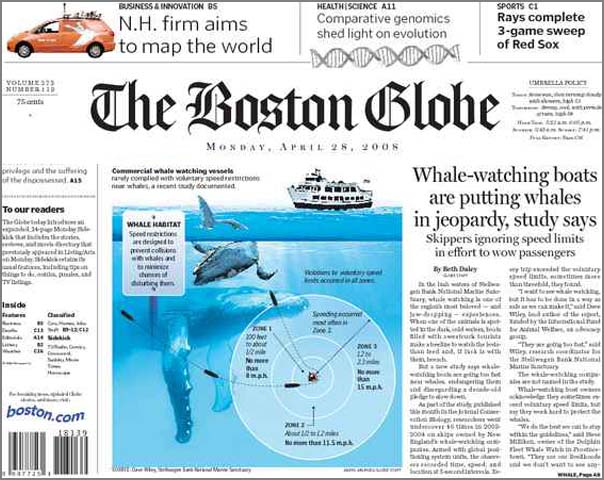
04.26.2008 23:31
GeoDjango, php5
Got two interesting emails this evening. The first was from Justin Bronn:
http://vislab-ccom.unh.edu/~schwehr/software/fink/php-5.2.5/
Since revision 7175 it supports spatial database introspection -- just make sure to have 'django.contrib.gis' in your `INSTALLED_APPS` setting so that GeoDjango's `inspectdb` command is used instead. Doing this will make the generated models have `PointField` instead of `TextField`. . Another note: by default the srid is 4326, so setting the srid keyword is redundant if you're using WGS84.The second was a response to a fink tracker item on php 5.2.x by James Marten. He reports that my php 5.2.5 package has been working for him. He mentioned adding --with-readline support to the build for php-shell. I've updated my php5 info file to include readline. Additionally, I switched if from libtool14 to libtool2. This may only impact php5-mcrypt.
http://vislab-ccom.unh.edu/~schwehr/software/fink/php-5.2.5/
04.25.2008 10:22
Quantitative skills for Geoscience students
This AGU EOS publication has an article this week on Making
Undergraduate Geoscience Quantitative:
Teaching Quantitative Skills in the Geosciences [Carlton]
From my quick look, I didn't see any mention of python and they do mention Excel. I try to encourage students to learn tools that can grow with them. Excel is not a tool that can really grow to the level that advanced research often needs. Excel can do some amazing things, but I would de-emphasize it.
Teaching Quantitative Skills in the Geosciences [Carlton]
From my quick look, I didn't see any mention of python and they do mention Excel. I try to encourage students to learn tools that can grow with them. Excel is not a tool that can really grow to the level that advanced research often needs. Excel can do some amazing things, but I would de-emphasize it.
04.25.2008 09:41
Dawn Wright - Arc Marine: GIS for a Blue Planet
How did I miss this one? Thanks to Phil for sending me a reference to
the book. I have a copy of Undersea with GIS.
Arc Marine: GIS for a Blue Planet-Case Studies in New Book Include USGS Sea-Floor Data [USGS]
Arc Marine: GIS for a Blue Planet-Case Studies in New Book Include USGS Sea-Floor Data [USGS]
Data from two U.S. Geological Survey (USGS) coastal sea-floor mapping projects are showcased in Arc Marine: GIS for a Blue Planet, a new reference book published by ESRI Press that details the Arc Marine data model-an evolving database design for managing spatial data from various types of marine research, including sea-floor mapping, fisheries management, marine-mammal tracking, monitoring of shoreline change, and oceanographic measurements. In addition to facilitating data organization and analysis, the new data model helps users create maps and three-dimensional scenes of the marine environment to assist decision making. An online companion to the book contains PowerPoint presentations, posters, and downloadable datasets to help readers further explore the capabilities of the data model. . The book's authors are a multidisciplinary team of geographic-information-system (GIS) scientists: Dawn Wright (Oregon State University), Michael Blongewicz (DHI Water and Environment, Inc.), Pat Halpin (Duke University), and Joe Breman (ESRI). All have extensive experience in applying GIS science to the marine realm and an appreciation for the complexity of the task: "The dynamic nature of ocean and coastal systems and the three-dimensional nature of water volumes require a fundamental rethinking of the often static and planar representation of spatial features used in terrestrial applications." The Arc Marine data model is intended to serve a wide range of users in the marine community, including "academic, government, military, and private oceanographers, resource managers, conservationists, geographers, nautical archeologists," and more. ... The geodatabase case study from the USGS/Photo Science collaboration contains a description of a database structure for storing seismic tracks and survey points, using the Louisiana Sedimentary and Environmental Database, or LASED (lah-sed´), as an example. LASED (URL http://coastal.er.usgs.gov/lased/) is the result of combined efforts by the USGS and academic collaborators to manage decades of geologic data from the Louisiana coastal zone. The principal data in LASED are sediment-core locations and descriptions, and seismic tracklines, shotpoints, and profiles from various sources. Recently, the data in LASED were reorganized into the Arc Marine data model. Chapter 3 describes some of the challenges of incorporating existing data into the Arc Marine data model, including some of the drawbacks of using the data model. ...
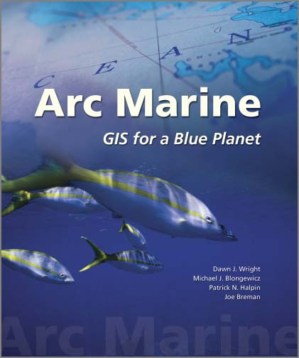
04.25.2008 09:18
Barrow, AK USCG deployment
Coast Guard Plans Arctic Deployment to Barrow [Coast Guard News]
JUNEAU, Alaska - An Arctic awareness deployment involving several Coast Guard commands is planned for Barrow from July 27 to Aug 11 in anticipation of the Coast Guard's increasing role in the Arctic. "My first year in Alaska proved the Arctic is not an issue 10 to 20 years into the future," said Rear Adm. Gene Brooks, Commander of the 17th Coast Guard District, "The Arctic is upon us now." . Two HH-65 Dolphin helicopters, one from Air Station Kodiak and another from the West Coast, will be deployed, along with two small boats. Boat and air crews will test the operational capabilities of these assets in unfamiliar locations and conditions while support personnel test communications and logistics. The overall exercise will determine what Coast Guard requirements and capabilities lie in the Arctic. ...
04.25.2008 06:43
Eastern Point Light schematic
I just finished another schematic/illustration of a light house. This
one is Eastern Point Light. This is based on a photograph and is
definitely not the exact proportions.
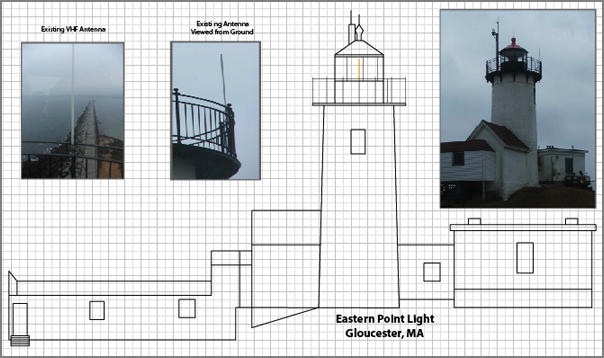
04.24.2008 15:01
FastCGI, Ubuntu 8.04, Window Grass, and Marine Debris
I'm trying to keep up with everything and it is definitely challenging.
Everyone and there cousin is talking about Ubuntu 8.04 LTS being released. Probably the best link today is from Mark Shuttleworth: The Heron takes flight
I've started looking at FastCGI for Mapserver. The fastcgi.com code is a bit frustrating from a build point of view and has a strange license.
UNH and NOAA are trying to remove marine debris: Marine Debris-to-Energy Project Launches - "Project will locate, collect, and recycle marine debris." [UNH Extension]: NH Marine Debris to Energy Project
Grass 6.3.0 has been released. Grass on Windows... "the new wxPython user interface is debuted".
Landsat Archive to be Made Available at No Charge [veryspatial]
Complex Django queries... I'm still learning the basics. A Tip on Complex Django Quieries [Jehiah]
And since my blog has been overly technical the last couple days, here is something pretty darn cool:
strength and courage [wwdn] - Wil talks about mantis eggs hatching and better yet, has pictures:
Back to Antenna Site proposal work...
Everyone and there cousin is talking about Ubuntu 8.04 LTS being released. Probably the best link today is from Mark Shuttleworth: The Heron takes flight
I've started looking at FastCGI for Mapserver. The fastcgi.com code is a bit frustrating from a build point of view and has a strange license.
UNH and NOAA are trying to remove marine debris: Marine Debris-to-Energy Project Launches - "Project will locate, collect, and recycle marine debris." [UNH Extension]: NH Marine Debris to Energy Project
Grass 6.3.0 has been released. Grass on Windows... "the new wxPython user interface is debuted".
Landsat Archive to be Made Available at No Charge [veryspatial]
Complex Django queries... I'm still learning the basics. A Tip on Complex Django Quieries [Jehiah]
And since my blog has been overly technical the last couple days, here is something pretty darn cool:
strength and courage [wwdn] - Wil talks about mantis eggs hatching and better yet, has pictures:
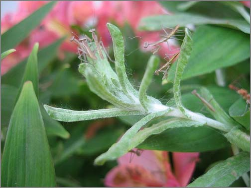
Back to Antenna Site proposal work...
04.24.2008 12:12
noaadata for AIS analysis, quick and dirty
Here is a quick check point on where I am for low level reporting of
ships. This is the easiest method. My other method runs through
PostGIS.
First grab some data. Use grep to only pull AIS VDM messages. We don't need the control/status NMEA messages coming through the system.
The data is now easily accessable, but not human readable. Time to dump the database tables formatted somewhat nicely. This will be tab delimited. You can check out the full list of fields with sqlite3 ais.db3 .schema.
Now to make comma separated files (csv) for import to MS Excel, Numbers, gnumeric, oleo, or OpenOffice.
-----
First grab some data. Use grep to only pull AIS VDM messages. We don't need the control/status NMEA messages coming through the system.
% tail -50 uscg-logs-2008-04-24 | grep AIVDM > log.aisNow we need to convert the data such that each line contains exactly one message. The input NMEA string has multiline messages (e.g. shipdata) that are just not good for parsing. This violates the NMEA maximum line length, but that doesn't matter.
% ais_normalize.py log.ais > log.ais.normNow dump the data into sqlite3. We don't really care about the database other than as an intermediate format.
% ais_build_sqlite.py --with-create log.ais.norm
processing file: log.ais.norm
{1: 32, 2: 0, 3: 1, 4: 0, 5: 4}
That give use 33 position messages (1, 2, and 3) and 4 shipdata messags (5)
Note that at the moment the is a bug with the timestamps. I know, but
haven't had a chance to fix it. Also take a look at sqlite3 that uses
the sqlite3 driver built into python(>2.5).
The data is now easily accessable, but not human readable. Time to dump the database tables formatted somewhat nicely. This will be tab delimited. You can check out the full list of fields with sqlite3 ais.db3 .schema.
% sqlite3 ais.db3 'SELECT UserID, longitude, latitude, SOG, COG FROM position LIMIT 5;' | tr '|' '\t' 316003289 -123.407461667 48.6886766667 0 191.5 366779440 -122.35025 47.58955 0.1 169 367326360 -122.382335 47.65756 0 213.3 367152240 -122.403566667 37.8074216667 2.4 195.5 693559 -70.624605 41.7375816667 0 15.6And the shipdata:
s% qlite3 ais.db3 'SELECT UserID, IMOnumber, callsign, name, shipandcargo, dimA,dimB,dimC,dimD, draught FROM shipdata;' | tr '|' '\t' | tr '@' ' ' | sort -un 338046000 8978473 WDA8289 NRC CAPE FLATTERY 54 0 0 0 0 0 367006060 1 WAV8350 ROYAL PRINCESS 60 7 30 4 5 2 368609000 0 WBE4853 ADVENTURE 0 1 2 3 4 15 636011280 9185047 ELYB2 UNITED SPIRIT 70 52 123 18 12 8.1The above command is a bit tricky. The second tr (translate) changes the annoying '@' characters to spaces, making strings easier to read. I also did a numberic and unique sort of the vessel UserID (aka MMSI) so that there is only one report per UserID.
Now to make comma separated files (csv) for import to MS Excel, Numbers, gnumeric, oleo, or OpenOffice.
% echo "UserID, longitude, latitude, SOG, COG" > positions.csv % sqlite3 ais.db3 'SELECT UserID, longitude, latitude, SOG, COG FROM position;' | tr '|' ',' >> positions.csvAnd for the ship name, size, and cargo message:
% echo "UserID, IMOnumber, callsign, name, shipandcargo, dimA,dimB,dimC,dimD, draught" > shipdata.csv % sqlite3 ais.db3 'SELECT UserID, IMOnumber, callsign, name, shipandcargo, dimA,dimB,dimC,dimD, draught FROM shipdata;' | tr '|' ',' | tr '@' ' ' | sort -un >> shipdata.csvRemember, this leaves out the Class B reports, not that we get many in the US yet. See AIS, this 'n' that #7 [Panbo] for commentary on the FCC not yet approving AIS Class B.
-----
04.23.2008 21:56
Ubuntu 8.04 just about out - cheat sheet
Ubuntu 8.04 is just about to be released. I've had 3 machines setup
with the beta for the last two weeks and have been impressed with
everything other than the gnome network static IP config bug that I
mentioned earlier. I'm still getting to know debhelper and reading
the Packaging
Guide My boxes report like so:
% lsb_release -a No LSB modules are available. Distributor ID: Ubuntu Description: Ubuntu 8.04 Release: 8.04 Codename: hardyThere is a Ubuntu 8.04 Cheat Sheet [PDF - fosswire.com] out. Looks like this:
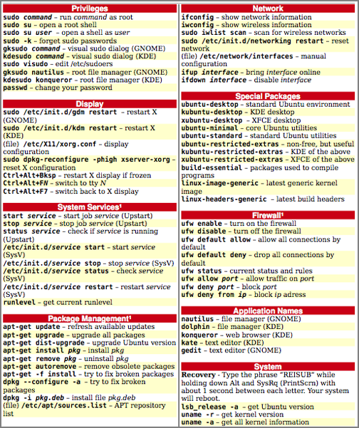
04.22.2008 18:18
Creating a deb software package for Ubuntu
WARNING: This post needs verification. Please let me know if you see something wrong. If you wipe your Linux partition with this don't blame me. You should try it in scratch VMWare Ubuntu image or something similar.
WARNING 2:This is most definitely not a good way to build a deb. I need to figure out dh_make (from the dh-make package).
The following is on a Ubuntu 8.04 beta install on a Intel machine.
After reading lots of documentation and getting all turned around trying to package some python software for Ubuntu, I decided to strike out on my own. I looked at what fink does and modelled my process after that.
Basically, I need to create a sub-directory tree with a DEBIAN directory containing a 'control' file and a directory tree that matches the root of the Debian tree. The root for fink defaults to sw and on Debian is will be usr (/usr).
I created a new rule in the noaadata package Makefile:
deb:
rm -rf build
rm -rf python-noaadata-${VERSION}
mkdir -p python-noaadata-${VERSION}/DEBIAN
perl -p -e "s|\@VERSION\@|${VERSION}|" < control.in > python-noaadata-${VERSION}/DEBIAN/control
./setup.py install --root=python-noaadata-${VERSION}
dpkg-deb -b python-noaadata-${VERSION} python-noaadata-${VERSION}.deb
The first step is to clean up from any prior installs. Installing
creates a build directory. Remove that. Also, to match Ubuntu's
package naming, I am calling this python-noaadata. With Fink, the
convention is noaadata-py25.
Next mkdir -p creates the package name and version directory and the location for the control file: python-noaadata-0.36/DEBIAN
Next I use a control file template and replace @VERSION@ with the actual version with a perl replacement. Here is the control file template, control.in:
Package: python-noaadata Source: python-noaadata Version: @VERSION@-1 Section: sci Installed-Size: 3456 Architecture: i386-linux Priority: optional Depends: python Maintainer: Kurt Schwehr <kurt _at_ ccom.unh.edu> Description: Python marine AIS library Marine Automatic Indentification System networking library. noaadata-py provides routines to encode and decode bitstreams need to send and receive AIS messages. The package also contains code to talk to the NOAA PORTS/CO-OPS waterlevel data through both SOAP and OpenDAP. . Web site: http://vislab-ccom.unh.edu/~schwehr/software/noaadataI got Architecture from dpkg-architecture.
% echo `dpkg-architecture -qDEB_HOST_ARCH`-`dpkg-architecture -qDEB_HOST_ARCH_OS` i386-linuxNow build the deb. This first does a standard setup.py distutils install followed by a dpkg-deb --build
% make debNow we need to inspect that deb that we just created.
% dpkg-deb --info python-noaadata-0.36.deb
new debian package, version 2.0.
size 761392 bytes: control archive= 523 bytes.
589 bytes, 16 lines control
Package: python-noaadata
Source: python-noaadata
Version: 0.36-1
Section: sci
Installed-Size: 3456
Architecture: i386-linux
Priority: optional
Depends: python
Maintainer: Kurt Schwehr <kurt _at_ ccom.unh.edu>
Description: Python marine AIS library
Marine Automatic Indentification System networking library. noaadata-py
provides routines to encode and decode bitstreams need to send and
receive AIS messages. The package also contains code to talk to
the NOAA PORTS/CO-OPS waterlevel data through both SOAP and OpenDAP.
.
Web site: http://vislab-ccom.unh.edu/~schwehr/software/noaadata
The show command:
dpkg-deb --show python-noaadata-0.36.deb python-noaadata 0.36-1Check out the contents:
% dpkg-deb --contents python-noaadata-0.36.deb drwxr-xr-x schwehr/schwehr 0 2008-04-22 21:00 ./ drwxr-xr-x schwehr/schwehr 0 2008-04-22 21:00 ./usr/ drwxr-xr-x schwehr/schwehr 0 2008-04-22 21:00 ./usr/bin/ -rwxr-xr-x schwehr/schwehr 3076 2008-04-22 21:00 ./usr/bin/ais_uniq.py -rwxr-xr-x schwehr/schwehr 96434 2008-04-22 21:00 ./usr/bin/aisxmlbinmsg2py.py ... -rw-r--r-- schwehr/schwehr 2753 2008-04-22 21:00 ./usr/lib/python2.5/site-packages/aisutils/daemon.pyc -rw-r--r-- schwehr/schwehr 4214 2008-02-05 21:08 ./usr/lib/python2.5/site-packages/aisutils/normalize.py -rw-r--r-- schwehr/schwehr 1630 2008-04-22 21:00 ./usr/lib/python2.5/site-packages/noaadata_py-0.36.egg-infoGive the installation a try:
% sudo dpkg -i python-noaadata-0.36.deb Selecting previously deselected package python-noaadata. (Reading database ... 132467 files and directories currently installed.) Unpacking python-noaadata (from python-noaadata-0.36.deb) ... Setting up python-noaadata (0.36-1) ...Inspect the installed package:
% dpkg -S /usr/bin/ais-db python-noaadata: /usr/bin/ais-db % dpkg -L python-noaadata | head -5 /. /usr /usr/bin /usr/bin/ais_uniq.py /usr/bin/aisxmlbinmsg2py.pyNow remove that package that you installed.
% sudo apt-get remove python-noaadata Reading package lists... Done Building dependency tree Reading state information... Done The following packages were automatically installed and are no longer required: linux-headers-2.6.24-12-generic linux-headers-2.6.24-12 Use 'apt-get autoremove' to remove them. The following packages will be REMOVED: python-noaadata 0 upgraded, 0 newly installed, 1 to remove and 130 not upgraded. After this operation, 3539kB disk space will be freed. Do you want to continue [Y/n]? (Reading database ... 132621 files and directories currently installed.) Removing python-noaadata ...See Also: https://wiki.ubuntu.com/PackagingGuide/Complete
04.22.2008 12:26
NH/ME Frontier Sentinel excercise
This is not something that is talked about much and I think the dates
are wrong on the web page.
US Coast Guard Frontier Sentinel Full Scale Exercise [Maine Emergency Management Agency]
US Coast Guard Frontier Sentinel Full Scale Exercise [Maine Emergency Management Agency]
Date: August 2, 2008 through August 2, 2008 Location: Maine / New Hampshire Piscatiqua River Description of Event: Federal Exercise developed by the US Coast Guard and involves Local, County, State, Federal and International level participation. This will utilize the Piscataqua River and a terrorist type scenario. For more information, contact: USCG LCDR SamsFrom December, 2007: Teamwork key to successful mine countermeasures exercise [Coast Guard News]
... Members of the Coast Guard, U.S. Navy, Federal Bureau of Investigations and Customs and Border Protection participated in the exercise, called Frontier Sentinel, on Dec. 10 through 12. Canadian Navy Mine Countermeasures Specialists from Joint Task Forces Atlantic, local emergency responders and law enforcement officials also participated. . The scenario included an underwater mine explosion at the mouth of the Piscataqua River that severely damaged an outbound container ship and the discovery of improvised explosive devices planted on the Memorial Bridge in Portsmouth. The Frontier Sentinel exercise's objective was to practice, evaluate and recommend improvements for multi-agency responses to maritime security threats with a focus on under water mine detection and countermeasures. ... A follow up Full Scale exercise, which will include the deployment of mine counter measure equipment and opportunities for full port partner participation, is scheduled to take place in Portsmouth in June, 2008.Note that the emphasis is mine.
04.22.2008 07:25
CCOM Internal Wiki using Media Wiki
At CCOM in March, Brian C., Nathan and I kicked off an internal wiki
for out research group of about 80 people. The results to date have
been very good. I have been a heavy user of the Administrative pages
lately.
We have several portals for topic groups. There is an In-Brief starter document intended for everyone to read, Computers to document our IT Infrastructure, Field Equipment that our researches depend on, Administration to make the whole department hum, Research for methods, bibliographies, and project pages, and Wiki Admin to help along the wiki'ing process. Here is a view of the research page:
One thing to remember that there is almost no such thing as a "finished" wiki page.
There are 413 total pages in the database. This includes "talk" pages, pages about CCOMwiki, minimal "stub" pages, redirects, and others that probably don't qualify as content pages. Excluding those, there are 203 pages that are probably legitimate content pages. . 93 files have been uploaded. . There have been a total of 5,786 page views, and 3,012 page edits since CCOMwiki was setup. That comes to 7.29 average edits per page, and 1.92 views per edit.Here are two views of our wiki to give people a sense of what an internal wiki might contain. Here is a view of the front page:
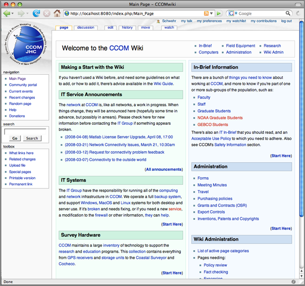
We have several portals for topic groups. There is an In-Brief starter document intended for everyone to read, Computers to document our IT Infrastructure, Field Equipment that our researches depend on, Administration to make the whole department hum, Research for methods, bibliographies, and project pages, and Wiki Admin to help along the wiki'ing process. Here is a view of the research page:
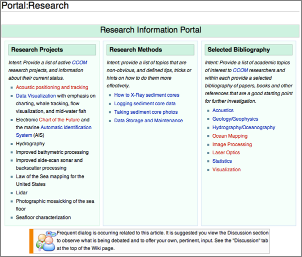
One thing to remember that there is almost no such thing as a "finished" wiki page.
04.22.2008 07:06
Open WetWare and Science 2.0
This made slashdot, so for most of you, this is a repeat. However, in
grepping my notes and blog entries, I found only one reference to an
Open WetWare article and that was to Parameter
Estimation Discussion Feb 05 from Python
All A Scientist Needs in my private notes.
Scientific American has an article on Science 2.0... Science 2.0 -- Is Open Access Science the Future? - Is posting raw results online, for all to see, a great tool or a great risk?
Scientific American has an article on Science 2.0... Science 2.0 -- Is Open Access Science the Future? - Is posting raw results online, for all to see, a great tool or a great risk?
... One early success is the OpenWetWare project at the Massachusetts Institute of Technology (www.openwetware.org). Launched in 2005 by graduate students working in the laboratories of M.I.T. biological engineers Drew Endy and Thomas Knight, the project was originally seen as just a better way to keep the two lab Web sites up-to-date. OpenWetWare is a wiki-a collaborative Web site that can be edited by anyone who has access. It uses the same software that underlies the online encyclopedia Wikipedia. The students happily started posting pages introducing themselves and their work.
Soon, however, they discovered that the wiki was also a convenient place to post what they were learning about lab techniques: manipulating DNA, getting cell cultures to grow. "A lot of the how-to gets passed around as lore in biology labs and never makes it into the protocol manuals," says Jason Kelly, a graduate student who now sits on the OpenWetWare steering committee. "But we didn't have that." Most of the students came from engineering backgrounds; theirs were young labs with almost no mentors. So whenever a student or postdoc managed to stumble through a new protocol, he or she would write down what was learned on a wiki page. Others would then add whatever tricks they had gleaned. The information was very useful to the labs' members, notes M.I.T. grad student and steering-committee member Reshma Shetty, but "that information also became available around the world." ...
04.21.2008 11:05
Marine Debris research at UNH
UNH research breaks down Seacoast beach trash figures [fosters.com]
... "For example, on Jenness Beach, balloons used to be one of the top five debris sources but in 2005 they were replaced by plastic containers," said Jenna Jambeck, a UNH research assistant professor with the department of civil and environmental engineering who wrote the proposal for the marine debris research group in 2005. ...
04.21.2008 10:58
GoogleEarth - image age and CCOM Wikipedia
Just talked to Dave Monihan about Google Earth. He attended the AAG
Google Earth section. Quite a few things came up in our discussions
and I'd like to highlight 3 things.
First is that Google Earth will now tell you when the imagery was acquired. In the image below, you can see that they think they took the image of CCOM during 2003.
My second item is another feature of the above image, contained within the Wikipedia layer. Notice that there is a Wikipedia Icon over CCOM. I created a CCOM wikipedia page on the 2nd of March this year. Google has scrapped the geographic location out of the wikipedia page and added it to Google Earth.
I encourange people to create Wikipedia pages for other research groups and update existing ones.
My last topic is terrains in Google SketchUp. There is a module called SketchUp Sandbox Tools that Dave told me about. I have not had a chance to try it.
First is that Google Earth will now tell you when the imagery was acquired. In the image below, you can see that they think they took the image of CCOM during 2003.
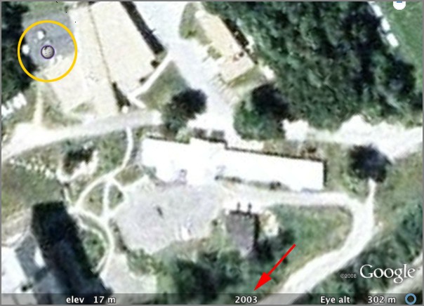
My second item is another feature of the above image, contained within the Wikipedia layer. Notice that there is a Wikipedia Icon over CCOM. I created a CCOM wikipedia page on the 2nd of March this year. Google has scrapped the geographic location out of the wikipedia page and added it to Google Earth.
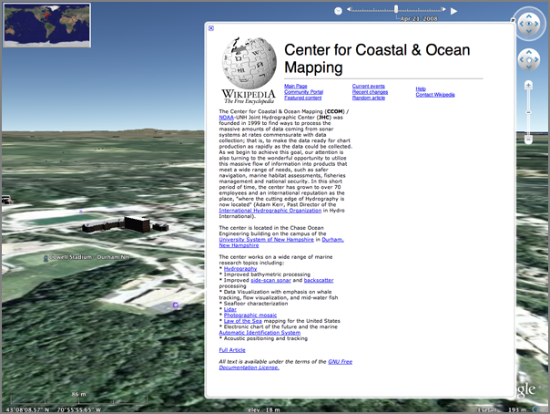
I encourange people to create Wikipedia pages for other research groups and update existing ones.
My last topic is terrains in Google SketchUp. There is a module called SketchUp Sandbox Tools that Dave told me about. I have not had a chance to try it.
04.18.2008 20:05
mdbtools in fink - Reading MS Access db files
I finally finished up my work on mdbtools for fink. You can now read
MS Access JET3 or JET4 files on a Mac. The 2 second tutorial:
See also my post from March: Using mdbtools to read MS Access Jet DB files from NOAA AWOIS
% fink install mdbtools % wget 'http://chartmaker.ncd.noaa.gov/hsd/awois/contus/downloads/area1(mdb).zip' % unzip 'area1(mdb).zip' % mdb-ver section\ 1.mdb JET4 % mdb-tables section\ 1.mdb Section 1 % mdb-sql -H -p section\ 1.mdb % mdb-shema section\ 1.mdb % mdb-export -I section\ 1.mdb "Section 1" > commands.sql
See also my post from March: Using mdbtools to read MS Access Jet DB files from NOAA AWOIS
04.18.2008 09:38
Illinois Mw 5.2 quake - ascii graphics
It still amuses me that the first moment tensor solutions are given out as ascii graphics:
USGS/SLU Regional Moment Tensor Solution
USGS/SLU Regional Moment Tensor Solution
08/04/18 09:36:57
ILLINOIS
Epicenter: 38.481 -87.826
MW 5.2
USGS/SLU REGIONAL MOMENT TENSOR
Depth 15 No. of sta: 15
Moment Tensor; Scale 10**16 Nm
Mrr= 0.00 Mtt= 5.79
Mpp=-5.79 Mrt=-0.28
Mrp=-0.60 Mtp= 4.86
Principal axes:
T Val= 7.59 Plg= 3 Azm=159
N 0.00 85 25
P -7.59 3 250
Best Double Couple:Mo=7.6*10**16
NP1:Strike= 25 Dip=90 Slip=-175
NP2: 295 85 0
#######
###############--
#################----
##################-------
###################----------
###################------------
-----#############-------------
----------########---------------
---------------##----------------
-----------------##--------------
----------------######-----------
------------###########-------
P -----------###############---
----------###################
----------###################
-------##################
----########### ###
--########### T #
#######
04.18.2008 08:14
MISLE and Ship Incidents
Can't believe I haven't blogged about this before. I converted the MISLE database as
released by the Bureau of Transportation Statistics to a KML back in
the summer of 2006. I first tried a custom dump of the MISLE db that
the USCG did for me. Turned out to be better to stick with the
official CD releases (now on the web). I was not looking at
environmental issues at the time, so I removed all of those (which
would dominate the display).
This morning, I saw a timely article on Many Eyes over on gCaptain.com: Maritime Casualties Charted
Here is the image they show, which is a really nice alternative to pie charts:
Here is my representation of the 2006 version of the data. I really need a better set of icons. If anyone knows where I can get better icons or is willing to donate, please let me know. I chucked in some OSHA symbols done up JWZ style along with a few icons from the Google Earth catalog. They are definitely confusing. The nuclear symbols are not related to nuclear events. They are Abandonment events.
There are two symbols that worked well: fires and explosions.
Here is a closeup view near New Orleans of an allision. Sometimes it's hard to tell if there was one even with a fire, allision, medical emergency, and so forth, or if this is a really dangerous part of the water way with many events.
This morning, I saw a timely article on Many Eyes over on gCaptain.com: Maritime Casualties Charted
Here is the image they show, which is a really nice alternative to pie charts:
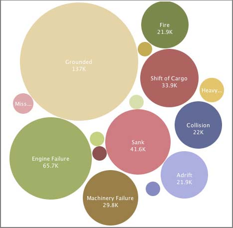
Here is my representation of the 2006 version of the data. I really need a better set of icons. If anyone knows where I can get better icons or is willing to donate, please let me know. I chucked in some OSHA symbols done up JWZ style along with a few icons from the Google Earth catalog. They are definitely confusing. The nuclear symbols are not related to nuclear events. They are Abandonment events.
There are two symbols that worked well: fires and explosions.
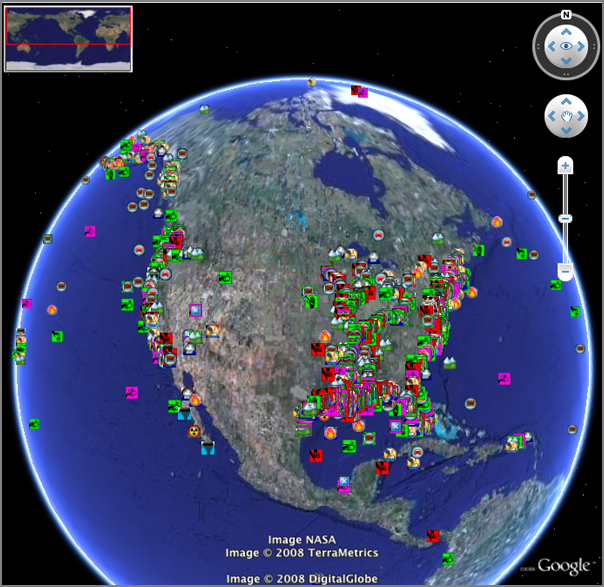
Here is a closeup view near New Orleans of an allision. Sometimes it's hard to tell if there was one even with a fire, allision, medical emergency, and so forth, or if this is a really dangerous part of the water way with many events.
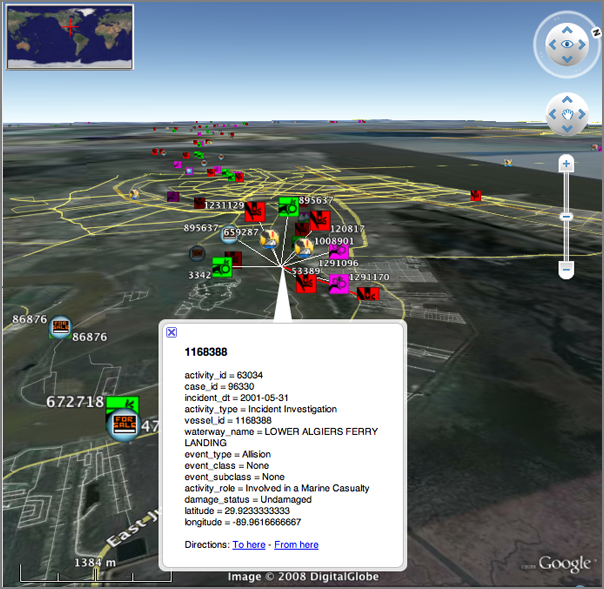
04.17.2008 14:50
ubuntu static ip bug
UPDATE: I did a 'sudo apt-get update' and uncheck and check the static interface active icon and the 'auto eth0' line in /etc/network/interfaces.
This is really more of a gnome bug, but it is hitting me with Ubuntu 8.04 beta. Thanks to Roland for sitting through a debug session with me. The problem is that a machine (actually 3 new machines) configured for a static IP was not coming up on the network on boot. Kind of important for a machine that will be remotely deployed for data logging. The machines do come up on the network if I do
sudo ifup eth0This is listed as bug 526137 for gnome. Or on ubuntu launchpad: 185854
The solution is to add the bold line below.
cat /etc/network/interfaces auto lo iface lo inet loopback auto eth0 iface eth0 inet static address 10.0.0.243 netmask 255.255.255.224 gateway 10.0.0.225Replace 10.0.0. with your local network config.
Asked and answered with google:
QUESTION: How am I supposed to control init scripts on Ubuntu. Not all of them appear in the Services GUI. And I'd rather not use a GUI. Is there no chkconfig equivalent? I remember learning that on IRIX 5 way back when I was learning to admin SGI's back in 96.
Ubuntu equivalence for chkconfig
Answers:
update-rc.dand
You rename and/or chmod -x the various in /etc/rc_.d Or you use BUM (Boot-up-Manager).and
http://sysv-rc-conf.sourceforge.net/ sudo apt-get install sysv-rc-conf sysv-rc-confI think I've used the last one. And finally... this sounds a bit sketchy. I'd like to stay standard
$ apt-get install libnewt0.51 $ ln -s /usr/lib/libnewt.so.0.51 /usr/lib/libnewt.so.0.50 $ wget http://www.tuxx-home.at/projects/chkconfig-for-debian/chkconfig_1.2.24d-1_i386.deb $ dpkg --force-all -i chkconfig_1.2.24d-1_i386.deb
04.17.2008 10:01
MIT Open Courseware - Communication System Design
This looks to be a great course. Especially great is to have the
course book online (at the bottom of the readings). Now if I could
just stop time, so I could sit down and work through this course...
6.973 Communication System Design [ocw.mit.edu]
6.973 Communication System Design [ocw.mit.edu]
This course presents a top-down approach to communications system design. The course will cover communication theory, algorithms and implementation architectures for essential blocks in modern physical-layer communication systems (coders and decoders, filters, multi-tone modulation, synchronization sub-systems). The course is hands-on, with a project component serving as a vehicle for study of different communication techniques, architectures and implementations. This year, the project is focused on WLAN transceivers. At the end of the course, students will have gone through the complete WLAN System-On-a-Chip design process, from communication theory, through algorithm and architecture all the way to the synthesized standard-cell RTL chip representation.
04.17.2008 08:22
ssh keepalive
Keeping Your SSH Connection Alive
... ssh -o TCPKeepAlive=yes user@some.host.com ... ssh -o ServerAliveInterval=30 user@some.host.com ..
04.16.2008 12:53
Google Geo Developer series on YouTube
Our first Google Geo Developer series is over...but the Youtubes will last a lifetime! [googlemapsapi.blogspot.com]
In which, you can see the speaker use a card board box for a podium.
In which, you can see the speaker use a card board box for a podium.
04.16.2008 12:49
NEG LNG initial cargo delayed
First cargo at U.S. Northeast LNG site delayed [reuters]
Update: More of the same.
Excelerate confirms US Northeast LNG cargo delay [reuters]
... "The cargo has not arrived. It was scheduled to arrive this Sunday, I believe. It's been postponed until May," said Lt. John Kousch of the U.S. Coast Guard in Boston. . The offshore buoy system, completed late last year, is capable of delivering up to 500 million cubic feet of natural gas daily to the New England market, or nearly 20 percent of regional demand. ...
Update: More of the same.
Excelerate confirms US Northeast LNG cargo delay [reuters]
NEW YORK, April 16 (Reuters) - Excelerate Energy said Wednesday it delayed for "scheduling reasons" the first liquefied natural gas delivery into the new Northeast Gateway LNG site off the coast of Massachusetts until sometime in May. . Excelerate Chief Operating Officer Jonathan Cook said in a statement the cargo onboard the tanker Excellence would be used for commissioning activities at the Northeast Gateway (NEG), as well as for delivery to an LNG terminal in South America. ...
04.16.2008 11:29
eworld for OpenStreetMap data
eWorld is a java app that
can handle OpenStreetMap data. Perhaps this will help me figur out
how to get the OSM data so I am not dependent on just their tiles.
And, I should make sure I am helping out for the areas that are
critical for my work. Can we add chart info to OSM? It would be
great to get the traffic separation scheme, lights, and buoys into
OSM.
A screen shot from their web site:
There is an example integration with OSM page: OSM_Integration
Trackback: OpenStreetMap Now Exports Maps and eWorld [slashgeo]
A screen shot from their web site:
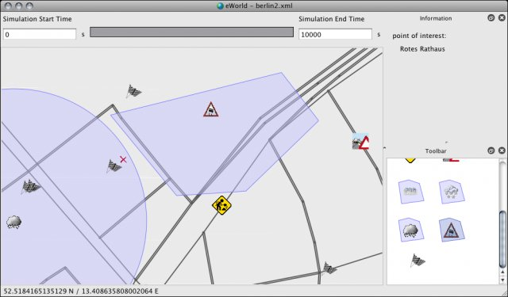
There is an example integration with OSM page: OSM_Integration
Creating OSM files from planet.osm and excerpts
openstreetmap.org offers a file named planet.osm, which is updated
weekly and contains all info currently stored in openstreetmap.org's
databases. However, even extracting the download can be very time
consuming. Therefore, on openstreetmap.org's wiki you can find some
links to excerpts automatically taken from planet.osm. For example for
the Europe at http://download.geofabrik.de/osm/. Nevertheless, even
these files are currently way too large for eWorld. Thus, another
excerpt made on your own is needed. This can be done with the tool
Osmosis. Basically, you need the bounding geocoordinates of the wished
city or region and use them as input to Osmosis:
.
martin@localhost ~ $ osmosis --read-xml file="bayern.osm" --bounding-box \
left="11.475109375" right="11.650890625" top="48.1849453125" \
bottom="48.0970546875" completeWays --write-xml file="muenchen.osm" -v
Trackback: OpenStreetMap Now Exports Maps and eWorld [slashgeo]
04.15.2008 07:05
psycopg2 2.0.7
[Psycopg] RELEASE: psycopg 2.0.7
What's new in psycopg 2.0.7
===========================
* Improved error handling:
- All instances of psycopg2.Error subclasses now have pgerror,
pgcode and cursor attributes. They will be set to None if no
value is available.
- Exception classes are now chosen based on the SQLSTATE value from
the result. (#184)
- The commit() and rollback() methods now set the pgerror and pgcode
attributes on exceptions. (#152)
- errors from commit() and rollback() are no longer considered
fatal. (#194)
- If a disconnect is detected during execute(), an exception will be
raised at that point rather than resulting in "ProgrammingError:
no results to fetch" later on. (#186)
* Better PostgreSQL compatibility:
- If the server uses standard_conforming_strings, perform
appropriate quoting.
- BC dates are now handled if psycopg is compiled with mxDateTime
support. If using datetime, an appropriate ValueError is
raised. (#203)
* Other bug fixes:
- If multiple sub-interpreters are in use, do not share the Decimal
type between them. (#192)
- Buffer objects obtained from psycopg are now accepted by psycopg
too, without segfaulting. (#209)
- A few small changes were made to improve DB-API compatibility.
All the dbapi20 tests now pass.
* Miscellaneous:
- The PSYCOPG_DISPLAY_SIZE option is now off by default. This means
that display size will always be set to "None" in
cursor.description. Calculating the display size was expensive,
and infrequently used so this should improve performance.
- New QueryCanceledError and TransactionRollbackError exceptions
have been added to the psycopg2.extensions module. They can be
used to detect deadlocks and statement timeouts respectively.
- Cursor objects now have a "closed" attribute. (#164)
- If psycopg has been built with debug support, it is now necessary
to set the PSYCOPG_DEBUG environment variable to turn on debug
spew.
04.14.2008 13:01
Boston Globe on the local deep water LNG port
Excelerate set to pump LNG from buoy off Gloucester [bostonherald.com]
Excelerate Energy will be pumping natural gas from its new LNG buoy system off the coast of Gloucester by the end of the month, a spokesman said. . The energy giant, which has spent about $350 million on the offshore project, has already used an empty LNG tanker to test whether its sophisticated buoys - which stretch to the ocean bottom where gas pipelines are located - works, spokesman Doug Pizzi said. Later this month, Excelerate's first full tanker is expected to tie up to the buoys and unload actual natural gas into the pipelines. . But the U.S. Coast Guard, which is in charge of security, has prevented the company from saying what specific day Excelerate will unload its initial huge energy cargo. Click to learn more... . "We're not going to be able to say it's happened until after it's happened," said Pizzi. ...I'll be watching via AIS...
04.14.2008 09:12
Highland light schematic view
REQUEST: If anyone has a schematic / architecture drawing of Highland Light, can you please send it my way?
I've been struggling with Illustrator to make a schematic view of Highland Light. I'm not comfortable with splines in illustrator. Time to switch to orthographic! Here is what I have so far:
Tracing over a photo layer:
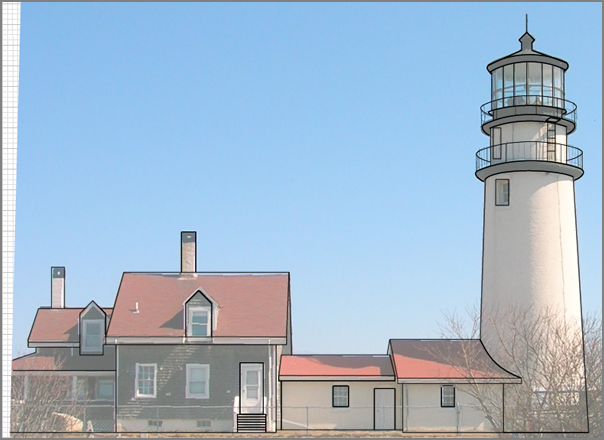
Over the grid that I used:
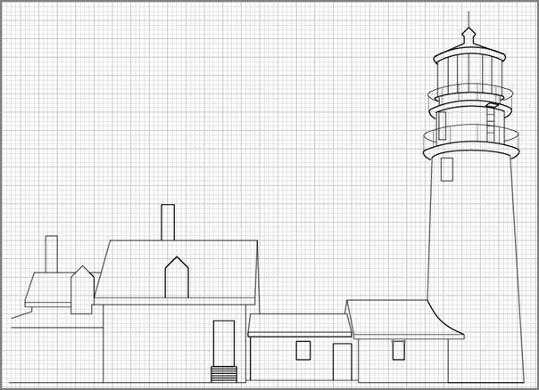
The line drawing without the grid:
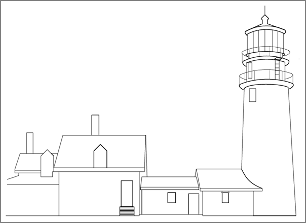
I redid the whole thing much quicker in a orthographic view. Illustrator is not the right tool for this kind of figure.
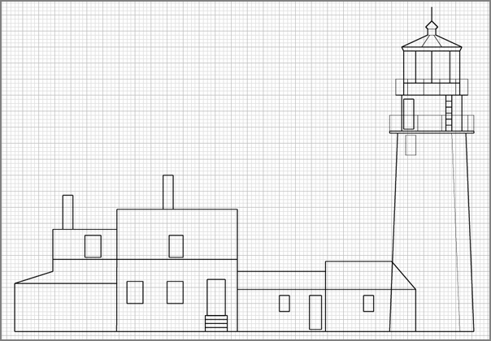
04.13.2008 14:14
Python regular expressions
To use django, I need to
brush up a bit on my Python regular expressions. I've wanted to get
comfortable with the python regex module (re) for quite some time. I
am a heavy user of egrep, but there is different feel to the python re
world compared to egrep and shell globs. I remember Jeff Ullman teaching
regular expressions with egrep and lex (now flex) in Intro To Computer
Science using his text book Foundations
of Computer Science (unfortunetly, I have the Pascal edition).
Perl programmers are assumed to know regular expressions. I think python programmers should get more exposure to regular expressions.
Here are a few notes. First on python resources:
Remember that you probably want to use raw strings to reduce the number of backslashes in your string.
Here is the sample code (with very minor alterations):
Track back: Sean Gillies talk about regular expressions - Python re.cipe
Perl programmers are assumed to know regular expressions. I think python programmers should get more exposure to regular expressions.
Here are a few notes. First on python resources:
- Dive Into Python's regular expressions
- Regular Expression HOWTO by A.M. Kuchling
tr '\t' ' ' < test.txtHere is the equivalent python:
#!/usr/bin/env python
import re, sys
for line in sys.stdin:
print re.sub('\t',' ',line),
Then getting to more complicated tasks, kodos is a really big leg up.
It provides a GUI environment to try regular expressions and it shows
the results as you type. There is "Regex Reference Guide" hiding
under the help menu that makes things much easier. It can then give
you sample code when you are done.
Remember that you probably want to use raw strings to reduce the number of backslashes in your string.
"\\w+\\s+\\1"becomes the raw string like this:
r"\w+\s+\1"
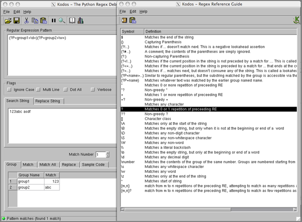
Here is the sample code (with very minor alterations):
#!/usr/bin/env python
#
import re
#
# common variables
rawstr = r"""(?P<group1>\d+)(?P<group2>\w+)"""
embedded_rawstr = r"""(?P<group1>\d+)(?P<group2>\w+)"""
matchstr = """123abc asdf"""
#
# method 1: using a compile object
compile_obj = re.compile(rawstr)
match_obj = compile_obj.search(matchstr)
#
# method 2: using search function (w/ external flags)
match_obj = re.search(rawstr, matchstr)
#
# method 3: using search function (w/ embedded flags)
match_obj = re.search(embedded_rawstr, matchstr)
#
# Retrieve group(s) from match_obj
all_groups = match_obj.groups()
#
# Retrieve group(s) by index
group_1 = match_obj.group(1)
group_2 = match_obj.group(2)
#
# Retrieve group(s) by name
group1 = match_obj.group('group1')
group2 = match_obj.group('group2')
#
print 'group1:',group1
print 'group2:',group2
Running it:
% ./foo.py group1: 123 group2: abc
Track back: Sean Gillies talk about regular expressions - Python re.cipe
04.13.2008 12:45
Phoenix Mars Lander makes slashdot
News about the upcoming landing on May 25th:
NASA Selects Landing Site for Phoenix Mars Lander [slashdot]
NASA Spacecraft Fine Tunes Course for Mars Landing [nasa]
NASA Selects Landing Site for Phoenix Mars Lander [slashdot]
NASA Spacecraft Fine Tunes Course for Mars Landing [nasa]
... The orbiter's [MRO] High Resolution Imaging Science Experiment camera has taken more than three dozen images of the area. Analysis of those images prompted the Phoenix team to shift the center of the landing target 13 kilometers (8 miles) southeastward, away from slightly rockier patches to the northwest. Navigators used that new center for planning today's maneuver. . The landing area is an ellipse about 62 miles by about 12 miles (100 kilometers by 20 kilometers). Researchers have mapped more than five million rocks in and around that ellipse, each big enough to end the mission if hit by the spacecraft during landing. Knowing where to avoid the rockier areas, the team has selected a scientifically exciting target that also offers the best chances for the spacecraft to set itself down safely onto the Martian surface. . "Our landing area has the largest concentration of ice on Mars outside of the polar caps. If you want to search for a habitable zone in the arctic permafrost, then this is the place to go," said Peter Smith, principal investigator for the mission, at the University of Arizona, Tucson. ...
04.11.2008 16:20
Federal Register - LNG Security Zone for NEG
From Coast Guard Proposes Safety Regulations for Area Surrounding Northeast Gateway LNG Deepwater Port [LNGLawBlog.com]
Federal Register: Regulated Navigation Areas, Safety Zones, Security Zones, and Deepwater Port Facilities; Navigable Waters of the Boston Captain of the Port Zone [gpi.gov]
Federal Register: Regulated Navigation Areas, Safety Zones, Security Zones, and Deepwater Port Facilities; Navigable Waters of the Boston Captain of the Port Zone [gpi.gov]
AGENCY: Coast Guard, DHS. ACTION: Notice of proposed rulemaking. SUMMARY: The Coast Guard proposes to establish regulated navigation areas around a recently constructed deepwater port facility in the waters of the Atlantic Ocean near the entrance to Boston Harbor and to establish safety and security zones around liquefied natural gas carriers (LNGCs) calling on these deepwater port facilities. The purpose of these regulated navigation areas is to protect vessels and mariners from the potential safety hazards associated with deepwater port operations, and to protect the LNGCs and deepwater port infrastructure from security threats or other subversive acts. All vessels, with the exception of LNGCs and deepwater port support vessels, would be prohibited from anchoring or otherwise deploying equipment that could become entangled in submerged infrastructure within 1000 meters of the submerged turret loading (STL) buoys associated with the deepwater port, and would be prohibited from entering waters within 500 meters of the deepwater port STL buoys or the LNGCs using them. Additionally, this proposed rule would make minor amendments to the existing LNG security regulations for the Boston Captain of the Port (COTP) Zone to reflect multi-agency enforcement of those regulations. DATES: Comments and related material must reach the Coast Guard on or before May 12, 2008.
04.10.2008 16:18
history
me too, but on Mac OSX...
history|awk '{a[$2]++ } END{for(i in a){print a[i] " " i}}'|sort -rn|head
88 cd
78 ls
47 svn
36 pwd
27 make
24 fink
19 grep
17 open
14 locate
12 mv
emacs would be in there, but it is just always running or spawned by things
like nb. Weird... it looks like I don't know where I am most of the time
with all those pwd commands.
04.10.2008 14:22
Thoughts on Trac wiki/bug tracker/svn tracker
I just got asked what I think of trac. Here are some of my
thoughts.
- Development has been quite rapid. You probably want to start off with the 0.11 betas.
- The integration between changes in svn, bugs, and the wiki is AWESOME!
- Make sure to run the svn and trac setups on the same server or you will have to use something like svk to sync from your svn server to trac which is slow and annoying, but works.
- I've had a little trouble with getting some of the plugins to be totally happy, but haven't really needed the plugins much. Just use the admin one
- The wiki is sufficient, but after doing a serious roll out of mediawiki for our non-dev folks, I wish trac was as powerful. However, for coding issues trac is better than mediawiki. Attaching files is clunky in trac, but it does work.
- I compared Trac to Mantis and Bugzilla in 2006 and Trac won hands down
- Do not use sqlite2... sqlite3 is way faster and more better
- Would suggest switching away from sqlite3 to a real server based db as sqlite3 is pretty wimpy and can't deal with multiple readers. If you want to use the db outside of the straight trac app, then a real db is a win. The db layout is really simple to understand, so writing things like django code would be pretty easy/cool... and only thought of that right now. Wonder if we could blend the auth system from django into trac so that trac would use the django tables. Guess what... A little searching got me DjangoAuthIntegration [Track-Hacks.org]
- When I first looked at 0.9 it didn't support postgresql, but it looks like 0.11b2 is all set for postgresql
04.10.2008 10:37
CCOM seminar tomorrow ... me
I'm giving tomorrow's CCOM seminar:
The CCOM Wiki
and
Automatic Identification System for Real-time Right Whale Notices
and
Automatic Identification System for Real-time Right Whale Notices
Friday, April 11th, 2:00 p.m. Chase Ocean Engineering Lab Dr. Kurt Schwehr Video Classroom 130
04.10.2008 07:23
Listing just the vessels with a certain MMSI
I've finally got a django example that will display all the possition
reports for a certain vessel. I'm using a named positional regular
expression group in the urls.py file:
from django.conf.urls.defaults import *
import ais_msgs.views
urlpatterns = patterns('',
(r'^position/$', ais_msgs.views.position),
(r'^position/mmsi/(?P\d{9})/$', 'ais_msgs.views.position_userid'),
)
The views.py in ais_msgs:
from django.shortcuts import render_to_response
import datetime
import ais_msgs.models
#
def position(request):
now = datetime.datetime.now()
vessels = ais_msgs.models.Position.objects.all()[:20]
return render_to_response('position.html',{'vessels':vessels,'current_date':now})
#
def position_userid(request,userid):
now = datetime.datetime.now()
vessels = ais_msgs.models.Position.objects.filter(userid=userid)[:10]
return render_to_response('position.html',{'vessels':vessels,'current_date':now})
Here is the small template html to view the record:
<html>
<body>
Most recent vessels seen as of <b>{{ current_date }}</b>:<p/>
{% for vessel in vessels %}
{{ vessel.userid }} - {{ vessel.cg_timestamp }} - {{ vessel.position }} <br/>
{% endfor %}
</body>
</html>
This does not make the prettiest page, but it is functional:
Most recent vessels seen as of 2008-04-10 09:07:04.580713: 338029917 - 2008-03-12 14:49:24 - POINT (181.0000000000000000 91.0000000000000000) 338029917 - 2008-03-12 14:49:32 - POINT (181.0000000000000000 91.0000000000000000) 338029917 - 2008-03-12 14:49:43 - POINT (181.0000000000000000 91.0000000000000000) 338029917 - 2008-03-12 14:49:54 - POINT (181.0000000000000000 91.0000000000000000) 338029917 - 2008-03-12 14:50:04 - POINT (181.0000000000000000 91.0000000000000000) 338029917 - 2008-03-12 14:50:13 - POINT (181.0000000000000000 91.0000000000000000) 338029917 - 2008-03-12 14:50:24 - POINT (181.0000000000000000 91.0000000000000000) 338029917 - 2008-03-12 14:50:32 - POINT (181.0000000000000000 91.0000000000000000) 338029917 - 2008-03-12 14:50:43 - POINT (181.0000000000000000 91.0000000000000000) 338029917 - 2008-03-12 14:50:54 - POINT (181.0000000000000000 91.0000000000000000)
04.09.2008 19:04
TWIC for UNOLS ships
Looks like I had better get a TWIC. Somehow I though I'd get away
without one. What was I thinking? Yet another ID for me to carry
around. Now, for work I will have 5 forms of ID that I have to use.
UNOLS_TWIC_INFO_040808.pdf [http://www.unols.org/]
UNOLS_TWIC_INFO_040808.pdf [http://www.unols.org/]
... Scientists and students that do not have TWIC cards will require escorts by approved personnel with TWIC cards in order to access secure facilities and vessels. The number of people that can be escorted by any person is limited to five, therefore leaving this responsibility to vessel crews and technicians would be very disruptive for mobilization, demobilization and science operations at sea and would not be supportable. ... TWIC REQUIRED for Unescorted Access Atlantic Explorer Atlantis Kilo Moana Knorr Marcus G. Langseth Melville New Horizon Oceanus Roger Revelle Seward Johnson Thomas Thompson
04.09.2008 18:44
First seeds of the year
I just started my first seeds of the year: bean pole romano (Phaseolus
vulgaris) and snow peas. These can't go outside until mid-may, so
they will just have to live in my kitchen. The mint is recovering
nicely after I seriously abused it last fall.
My neighbor's rubarb and garlic are just starting to poke up through the ground.
Track back: More Gardening in which Sean asks
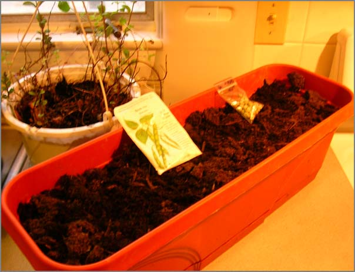
My neighbor's rubarb and garlic are just starting to poke up through the ground.
Track back: More Gardening in which Sean asks
Are people from a farming or gardening tradition more likely to cultivate open source software?
04.09.2008 17:18
UNH float
I got an unusual present from the neighbors... a UNH float. Tomorrow
it will make its way back to the owner. Apparently, this washed up
in New Castle today.
UPDATE: The mooring came from Win Watson's lab and is now on its way back to them.
UPDATE: The mooring came from Win Watson's lab and is now on its way back to them.
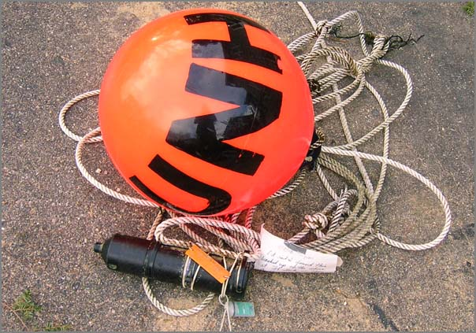
04.09.2008 08:37
geodjango admin interface prototype
Using the admin interface, I have a quick prototype of what I'd like
the basic report web page to be for AIS position reports using
geodjango. It seems that search only works for text. Is that true?
Here is the modification I made to the Position model:
I think rather than position, people will probably want distance from some stored location or region (e.g. distance from the TSS).
Here is the modification I made to the Position model:
class Position(models.Model):
# ... Same as before ...
# Enable admin interface
class Admin:
list_display = ('userid'
,'sog'
,'cog'
,'navigationstatus'
,'position'
,'cg_timestamp')
list_filter = ('userid'
,'sog'
,'navigationstatus'
,'cg_timestamp')
search_fields = ('userid',) # Broken?
Here is what it looks like right now:
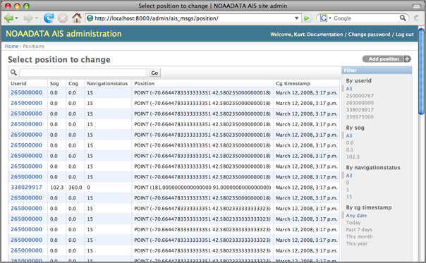
I think rather than position, people will probably want distance from some stored location or region (e.g. distance from the TSS).
04.09.2008 08:07
Gridding AIS data
REQUEST: If anyone knows who the point of contract is for this project at
Fugro, please let me know. Fugro is an industrial partner with my
group (CCOM), but it is a big company.
Last year, I added code to noaadata to do basic occupancy gridding of AIS vessel tracks that treat a vessel track as a line and provides for a tunable absence time to separate tracks of a particular vessel into "transits." Mike Thompson then turned the grids into nice visualizations using ArcGIS. Here is a sample. The full grids are currently in a submitted journal paper out for review. I'm also trying to find time to work up additional algorithms beyond just counting transits across the cell.
I just recently saw ChartViewAIS [PDF] by Fugro that has AIS track gridding. Looks like they support arbitrary orientations of grids which is pretty but not hugely useful for our analysis.
Last year, I added code to noaadata to do basic occupancy gridding of AIS vessel tracks that treat a vessel track as a line and provides for a tunable absence time to separate tracks of a particular vessel into "transits." Mike Thompson then turned the grids into nice visualizations using ArcGIS. Here is a sample. The full grids are currently in a submitted journal paper out for review. I'm also trying to find time to work up additional algorithms beyond just counting transits across the cell.
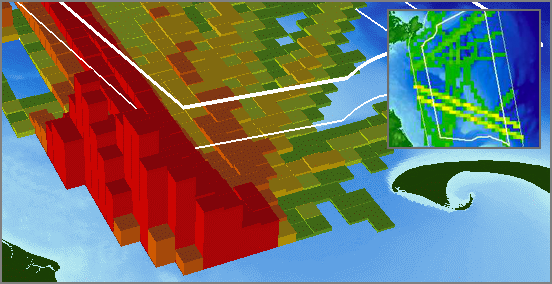
I just recently saw ChartViewAIS [PDF] by Fugro that has AIS track gridding. Looks like they support arbitrary orientations of grids which is pretty but not hugely useful for our analysis.
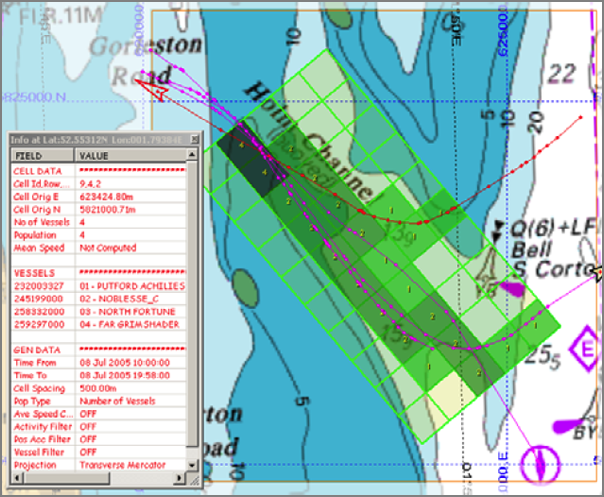
04.08.2008 17:06
GeoDjango can parse geometries
I've managed now to get GeoDjango to work with my ship reports table!
This is a big deal for me. I'm trying to make a reporting and
summarization tool. First I tried to just connect to the database
to see if the gis contrib module hijacks the database cursor. It
clearly does not.
I've turned on the Admin interface and it knows to decode the WKB to WKB (aka AsText). This is the behavior that I would hope for. I think this is better than fields for x,y that would explode for other geometry types.
% ipython manage.py shell
In [1]: from django.db import connection
In [2]: cursor = connection.cursor()
In [3]: cursor.execute('SELECT position FROM position LIMIT 5')
In [4]: all = cursor.fetchall()
In [5]: all[0]
Out[5]: ('0101000020E6100000E0A96DB05DB851C034AAF9172E9A4540',)
The position comes out at the WKB hex string for the Point field position.
That's okay, but there is something strange. ipython is not working
correctly. I wanted to see the history and nothing happened. This is
how it is supposed to work:
% ipython
In [1]: import os
In [2]: import sys
In [3]: hist
1: import os
2: import sys
3: _ip.magic("hist ")
But what I see with django:
In [14]: hist NameError Traceback (most recent call last) /Users/schwehr/Desktop/gdj/ais_www/Enough of that. On to a working example. I had loaded some AISdata into postgis in my last post about geodjango. Now I want to really see it!in () NameError: name 'hist' is not defined In [15]: %hist ERROR: Magic function `hist` not found.
% ipython manage.py shell In [1]: from ais_msgs.models import Position In [2]: pos_list = Position.objects.all() In [3]: p.position.x Out[3]: -70.880718333333334 In [4]: p.userid Out[4]: 265000000Sweet!
I've turned on the Admin interface and it knows to decode the WKB to WKB (aka AsText). This is the behavior that I would hope for. I think this is better than fields for x,y that would explode for other geometry types.
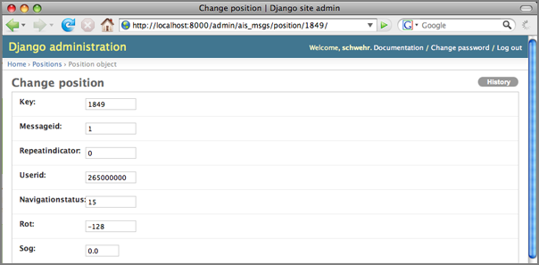
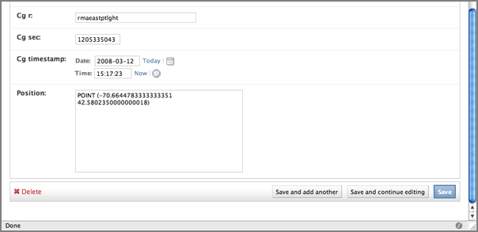
04.07.2008 14:48
Antilogger take two
I needed to get a 2nd serial logger, so this time I got the non-oem
version. Here are photos of both the OEM and one I just got. Looks
like I have to add a cable if I want to drive this with a 9V battery.
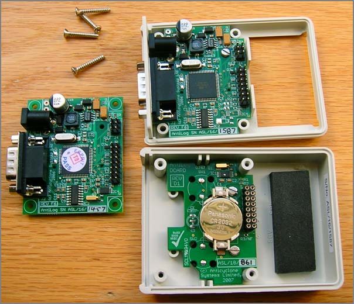
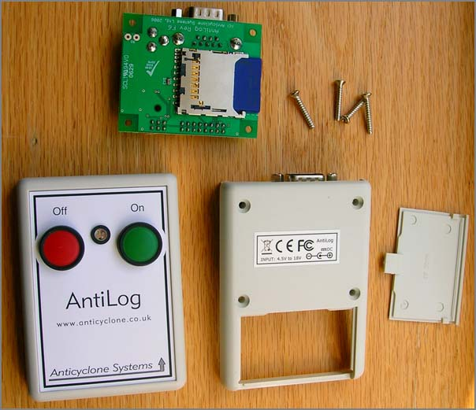
04.07.2008 08:50
Right Whale Listening Network
Today the Cornell Lab of Ornithology Bioacoustics Research Program (BRP) released the Right Whale Listening Network [listenforwhales.com].
The boston globe has an article: Whale watch - Undersea detection system helps to guard against collision with ships:
The web site looks like this:
The site provides details on how the system works, e.g.:
Trackback: AIS for Right Whales? [gcaptain]
The boston globe has an article: Whale watch - Undersea detection system helps to guard against collision with ships:
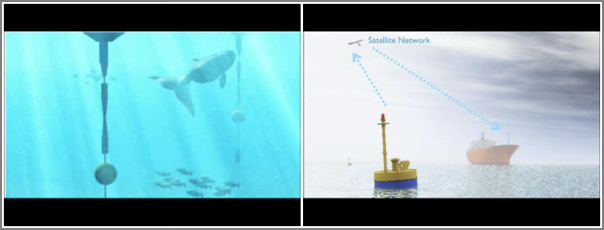
The web site looks like this:
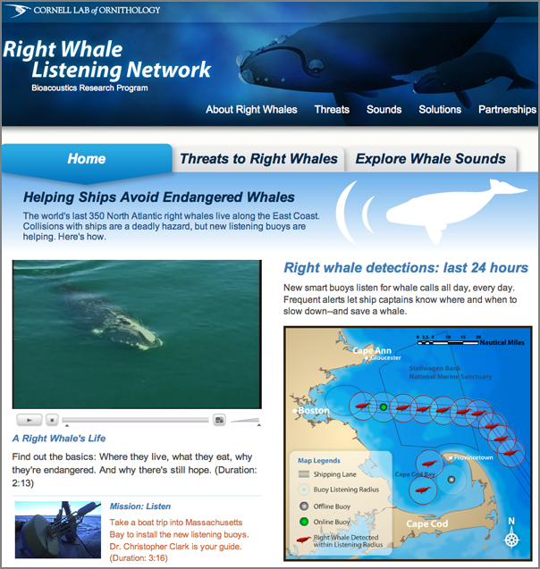
The site provides details on how the system works, e.g.:
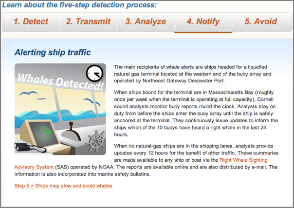
Trackback: AIS for Right Whales? [gcaptain]
04.06.2008 21:18
geodjango fink package
I've finally created a fink package for GeoDjango (aka
django_gis). GeoDjango requires libgeos3 (not libgeos2), therefor, I
spent a bit of time creating postgis83 and gdal packages that use
libgeos3. I'm using a svn snapshot of GeoDjango that I created today. The whole lot can be found here:
http://vislab-ccom.unh.edu/~schwehr/software/fink/geodjango/
The only really tricky part was making sure that the python ctypes interface was able to find both gdal and libgeos3. I added a patch script to the geodjango-py.info file:
The most important change is to switch out the first line and import the models from geodjango. Otherwise, things like PointField will not be understood. Then position gets an overhall. I changed it from a TextField to a PointField and added a srid/EPSG of 4326 to say that it is geographic WGS84.
Then it is time to turn the tables and see what geodjango thinks the database should look like:
The install is able to run the above commands and passed the three tests at the bottom of the GeoDjangoInstall page. However, that doesn't test actually working with the coordinates.
http://vislab-ccom.unh.edu/~schwehr/software/fink/geodjango/
The only really tricky part was making sure that the python ctypes interface was able to find both gdal and libgeos3. I added a patch script to the geodjango-py.info file:
PatchScript: << perl -pi -e 's|libgdal.dylib|%p/lib/libgdal.1.dylib|g' django/contrib/gis/gdal/libgdal.py perl -pi -e 's|libgeos_c.dylib|%p/lib/libgeos_c.1.4.1.dylib|g' django/contrib/gis/geos/libgeos.py <<The first thing to do is to get your databases up to this version of postgis with the right libraries. I don't have an existing db on this machine right now, so I do not have the best notes for it.
% dropdb ais # Danger... don't do this if you have valuable data in the db % sudo daemonic disable postgresql82 % fink install geodjango-py25 % sudo daemonic enable postgresql83 % sudo /sw/bin/pgsql.sh-8.2 stop waiting for server to shut down.... done server stopped % sudo /sw/bin/pgsql.sh start % sudo -u postgres createuser -U postgres -W $USER -P % createdb ais % psql -f /sw/share/doc/postgis83/lwpostgis.sql -d ais % psql -f /sw/share/doc/postgis83/spatial_ref_sys.sql -d aisLoad some pre normalized AIS data and build the tables at the same time.
% ais_build_postgis.py -C log.2008-03-12.normNow test the databzse:
ais=# select AsText(position) from position limit 10;
astext
==========================================
POINT(-70.8807183333333 43.2045316666667)
POINT(-70.8807183333333 43.2045316666667)
POINT(-70.8807183333333 43.2045316666667)
POINT(181 91)
POINT(-70.8807183333333 43.2045316666667)
POINT(-70.8807183333333 43.2045316666667)
POINT(-70.8807183333333 43.2045316666667)
POINT(-70.8807183333333 43.2045316666667)
POINT(-70.8807183333333 43.2045316666667)
POINT(-70.8807183333333 43.2045316666667)
(10 rows)
Since I already have a database setup, I can have django output what
it things the model file should look like. Apparently, this does not
know about the postgis extra tables and field types. It creates
models for SpatialRefSys and GeometryColumns that I do not need. I
only have one spatial field in the position table called
position. Note that it outputs it as a TextField.
% python manage.py inspectdb > priliminary_models.py
class Position(models.Model):
key = models.IntegerField(primary_key=True)
messageid = models.IntegerField()
repeatindicator = models.IntegerField()
userid = models.IntegerField()
navigationstatus = models.IntegerField()
rot = models.IntegerField()
sog = models.DecimalField(max_digits=4, decimal_places=1)
positionaccuracy = models.IntegerField()
cog = models.DecimalField(max_digits=4, decimal_places=1)
trueheading = models.IntegerField()
timestamp = models.IntegerField()
regionalreserved = models.IntegerField()
spare = models.IntegerField()
raim = models.BooleanField()
state_syncstate = models.IntegerField()
state_slottimeout = models.IntegerField()
state_slotoffset = models.IntegerField()
cg_r = models.CharField(max_length=15)
cg_sec = models.IntegerField()
cg_timestamp = models.DateTimeField()
position = models.TextField() # This field type is a guess.
class Meta:
db_table = u'position'
I need a django application to put this in:
% python manage.py startapp ais_msgs % cd ais_msgsI then modified the models.py. In bold are all the lines that are different from the priliminary version.
from django.contrib.gis.db import models
# Leave out SpatialRefSys?
class Position(models.Model):
key = models.IntegerField(primary_key=True)
messageid = models.IntegerField()
repeatindicator = models.IntegerField()
userid = models.IntegerField()
navigationstatus = models.IntegerField()
rot = models.IntegerField()
sog = models.DecimalField(max_digits=4, decimal_places=1)
positionaccuracy = models.IntegerField()
cog = models.DecimalField(max_digits=4, decimal_places=1)
trueheading = models.IntegerField()
timestamp = models.IntegerField()
regionalreserved = models.IntegerField()
spare = models.IntegerField()
raim = models.BooleanField()
state_syncstate = models.IntegerField()
state_slottimeout = models.IntegerField()
state_slotoffset = models.IntegerField()
cg_r = models.CharField(max_length=15)
cg_sec = models.IntegerField()
cg_timestamp = models.DateTimeField()
position = models.PointField(srid=4326)
#
objects = models.GeoManager() # Required for geodjango
#
class Meta:
db_table = u'position'
The most important change is to switch out the first line and import the models from geodjango. Otherwise, things like PointField will not be understood. Then position gets an overhall. I changed it from a TextField to a PointField and added a srid/EPSG of 4326 to say that it is geographic WGS84.
Then it is time to turn the tables and see what geodjango thinks the database should look like:
% python manage.py sqlall ais_msgs
BEGIN;
CREATE TABLE "position" (
"key" integer NOT NULL PRIMARY KEY,
"messageid" integer NOT NULL,
"repeatindicator" integer NOT NULL,
"userid" integer NOT NULL,
"navigationstatus" integer NOT NULL,
"rot" integer NOT NULL,
"sog" numeric(4, 1) NOT NULL,
"positionaccuracy" integer NOT NULL,
"cog" numeric(4, 1) NOT NULL,
"trueheading" integer NOT NULL,
"timestamp" integer NOT NULL,
"regionalreserved" integer NOT NULL,
"spare" integer NOT NULL,
"raim" boolean NOT NULL,
"state_syncstate" integer NOT NULL,
"state_slottimeout" integer NOT NULL,
"state_slotoffset" integer NOT NULL,
"cg_r" varchar(15) NOT NULL,
"cg_sec" integer NOT NULL,
"cg_timestamp" timestamp with time zone NOT NULL
)
;
SELECT AddGeometryColumn('position', 'position', 4326, 'POINT', 2);
ALTER TABLE "position" ALTER "position" SET NOT NULL;
CREATE INDEX "position_position_id" ON "position" USING GIST ( "position" GIST_GEOMETRY_OPS );
COMMIT;
Nice! I have a bunch more to do to make this into a full application.
The install is able to run the above commands and passed the three tests at the bottom of the GeoDjangoInstall page. However, that doesn't test actually working with the coordinates.
04.06.2008 14:42
Remote wireless data connections using the existing mobile infrastructure
I just read this Digi article: Remote
Wireless Networking 101, Everything You Need to KNow to Select and
Deploy Devices on CDMA and GSM Networks.
I'm deploying a little Supervisory Control And Data Acquisition (SCADA) application very similar to their diagram:
This is a nice table summarizing the history of services.
Anyone have feed back from using this kind of system? I'm controlling a single serial device and have unobstructed line-of-sight to a cell tower 2 km away. I had 3 bars from the site with my USB720 and my dual 800/1900 CDMA 1X-EVDO phone. Connecting to the internet with the USB720 went quite well. Too bad I forgot to write down the signal strength.
I'm deploying a little Supervisory Control And Data Acquisition (SCADA) application very similar to their diagram:
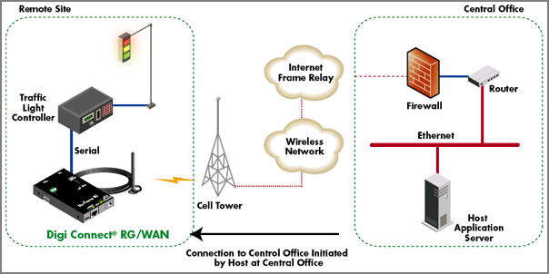
This is a nice table summarizing the history of services.
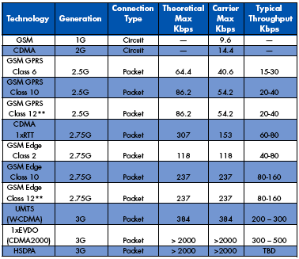
Anyone have feed back from using this kind of system? I'm controlling a single serial device and have unobstructed line-of-sight to a cell tower 2 km away. I had 3 bars from the site with my USB720 and my dual 800/1900 CDMA 1X-EVDO phone. Connecting to the internet with the USB720 went quite well. Too bad I forgot to write down the signal strength.
04.06.2008 14:28
Salem, MA
Yesterday, a couple of us made it down to Salem, MA for a bit. Neat
place. We definitely need to get back down there for Halloween.
The harbor:
A tall ship is moored at the old stone docks.
The grave yard has lots of great creapy trees.
The harbor:
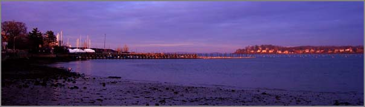
A tall ship is moored at the old stone docks.
The grave yard has lots of great creapy trees.
04.04.2008 16:59
Google earth reproject
Today, Rob and I needed to covert from lon/lat geographic WGS84 to the Google Projection. Here is how we did it with proj:
% cs2cs +proj=latlon +to +init=epsg:900913 -70.71064618011329 43.07160032505357 -7871473.13 5322876.50 0.00Then we put this in the text file and referenced it from open layers:
5322876.50,-7871473.13BTW, This is the rough location of the NOAA tide gauge in New Castle, NH.
04.04.2008 10:44
Being boarded by USCG
Here is a short account of being boarded by the USCG: A Visit From The Coast Guard [navgear]
First: Why no AIS? It turns out that military and Coast Guard vessels don't always broadcast AIS that we ordinary civilians can see. OK, that makes sense. The lesson: don't assume that all the large, fast vessels with which you could possibly collide are displayed on your AIS-equipped chart display! Remember, "The prudent mariner will not rely solely on any single aid to navigation."
04.04.2008 10:42
AIS to capture images of vessels
This is something I have wanted to do for about two years and it is
nice to see that somebody beat me to it... I wanted to setup a camera
in New Castle and capture and image of each vessel that showed itself
transiting infront of the camera via AIS. Here is that idea, but for
San Francisco.
Hi-Def | San Francisco
Covered at gCaptain: 30 Days of San Francisco Ship Traffic - Charted
Hi-Def | San Francisco
Covered at gCaptain: 30 Days of San Francisco Ship Traffic - Charted
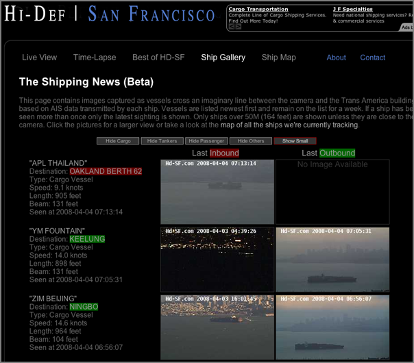
04.04.2008 10:27
Boston USCG watchstanders
First District Command Center (FOR RELEASE) [flickr tidewatermuse]
BOSTON - Coast Guard watchstanders conduct routine maritime safety and security operations in the newly renovated First District Command Center in Boston, March 28, 2008. (U.S. Coast Guard photo by Petty Officer 2nd Class Luke Pinneo)
04.04.2008 08:17
BRP and Vermont
I just finished a visit to the Bioacoustics Research Program (BRP) at Cornell.
The drive back was a little less eventful. Here is a house on Hwy 9 in Vermont.
The drive back was a little less eventful. Here is a house on Hwy 9 in Vermont.
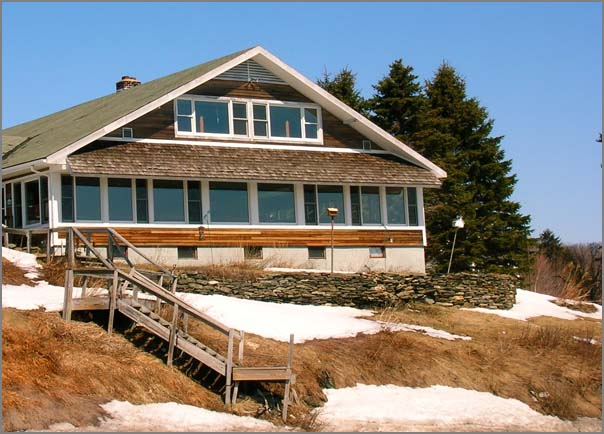
04.03.2008 18:16
NEG Terminal first cargo?
Excelerate May Have Secured First LNG Cargo for Northeast Gateway LNG Terminal [lng law blog]
Platts LNG Daily [subscription required] reports that Excelerate Energy has secured an initial LNG cargo from Trinidad & Tobago for its Northeast Gateway LNG deepwater port. According to Platts, shipping records suggest that Excelerate's Excelsior LNG vessel is in Trinidad and will transport the cargo to the Northeast Gateway terminal.
04.03.2008 17:22
Another Phoenix video released
The Phoenix Mars Lander is getting really close to Mars... Judy has a
link to the Nav team talking about the process of getting the spacecraft
there. Check it out...
Seven minutes of terror
Seven minutes of terror
04.03.2008 17:14
Thunderbird seek addon
Eric S. from the BRP pointed me to Seek, which is a plug-in for the
thunderbird mail client that tries to help you cope with lots of
email. I've installed it and played with it for a few minutes. Seems
pretty cool.
http://simile.mit.edu/seek/
The author's screenshot:
http://simile.mit.edu/seek/
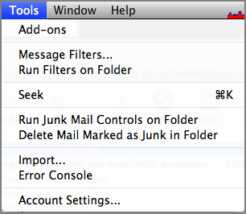
The author's screenshot:
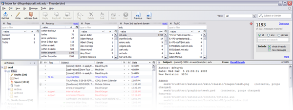
04.03.2008 17:08
Multiple home pages with firefox
I randomly discovered that with firefox, you can give it multiple
pages for your start page and it will open them in separate tabs when
you create a new window. Just separate the URL's by '|' characters.
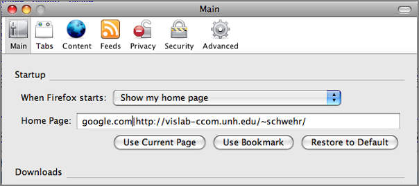
04.02.2008 23:03
UNH Greenhouse open to the public
Last weekend, the UNH Greenhouse was open to the public. The
temperatures and wind outside made for biting weather. However, inside
felt quite tropical.
Carnivorous plants!
And I have to post a picture of flowers.
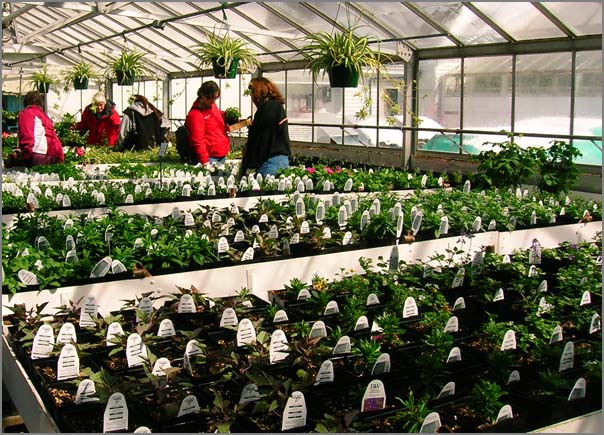
Carnivorous plants!
And I have to post a picture of flowers.
04.02.2008 22:59
Driving to Cornell
This week, I visited Cornell for the first time. Great trip! The
drive west was eventful. The weather suddenly got warm and the snow
went straight to fog.
However, the driving was a lot easier using a borrowed garmin unit.
The day didn't end with a sunset, but the clouds were quite dramatic.
However, the driving was a lot easier using a borrowed garmin unit.
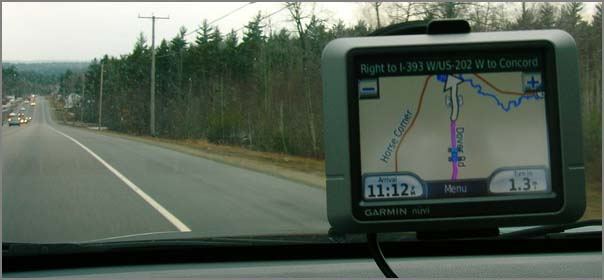
The day didn't end with a sunset, but the clouds were quite dramatic.
04.02.2008 07:51
Full text searches with PostgreSQL 8.3
The Linux Gazette has an article Searching for Text
(Part I) that covers doing searches for text. Strange that there
is no mention of grep, but an excellent starting point.
First it goes through getting text:
Then MySQL and finally PostgreSQL.
There is also an article on PostgreSQL database views
First it goes through getting text:
1. PDF: pdftotext -q -eol unix -enc UTF-8 $IN - > $OUT 2. Postscript: pstotext $IN | iconv -f ISO-8859-1 -t UTF-8 -o $OUT - 3. MS Word: antiword $IN > $OUT 4. HTML: html2text -nobs -o $OUT $IN 5. RTF: unrtf --nopict --text $IN > $OUT 6. MS Excel: py_xls2txt $IN > $OUT 7. any OpenOffice document: ooo_as_text $IN > $OUT
Then MySQL and finally PostgreSQL.
Of course PostgreSQL can also deal with full text searches - a plugin
called Tsearch2 is available for PostgreSQL database servers prior to
version 8.3.0 (it's integrated into 8.3.0). Just like for the MySQL
functions, you can fine-tune these according to the language your
texts are written in. The content has to be transformed into tokens,
and PostgreSQL offers new database objects that deal with these
operations. The Tsearch2 engine provides text parsers for
tokenisation, dictionaries for normalisation of tokens (and lists of
stop words), templates for switching between parsers or dictionaries,
and configurations to use whatever language you need to.
...
CREATE INDEX documents_idx ON documents USING gin(to_tsvector('english',content));
SELECT filename,mtime FROM documents WHERE to_tsvector(content) @@ to_tsquery('lorem');
...
There is also an article on PostgreSQL database views